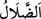

Kâfirlere nasihat yoluyla “Allah’ın size rızık” lütuf ve ikram “olarak
verdiklerinden” mal çeşitlerinden bir kısmını “hayra” muhtaçlara “sarfediniz,” çünkü
bu, belâları geri çeviren ve istenmeyen şeyleri uzaklaştıran şeylerdendir. “denildiğinde,
kâfirler” yaratıcı olan Allah’ı inkâr eden zındıklar “mü’minlere”, onlarla ve onların
işleri Allah Teâlâ’nın dilemesine bağlamalarıya alay etmek üzere “dediler ki:” Çünkü
kâfirler ‘Allah dilese falanca kimseyi zengin yapardı’ yine ‘Allah dilese falanca kimseyi
aziz ederdi. Allah dilese şöyle olurdu. Allah dilese böyle olurdu’ derlerdi. Onlar
yaradanı inkâr ettikleri için bu sözleri alay kabul edilmiştir. Dolayısıyla verdikleri
mezkûr cevap bir inanç ve ciddiyetten kaynaklanmamaktadır.
Zındık hiçbir ilâha, yeniden diriltilmeye ve hiçbir şeyin hurmetine/haram olduğuna
inanmayan kimsedir.
“Sizin inancınıza/iddiânıza göre “Allah’ın dilediği takdirde doyuracağı kimseleri”
sizin bize öğüt verdiğiniz şekilde mallarımızdan “biz mi doyuracağız?” Yani biz
doyurmayız. Sizin iddiânıza göre halkı doyurmaya kadir olan Allah’ın onları doyurması
gerekirdi. Madem ki O yiyecek vermedi biz de vermeyiz.
Taâm aslında buğdaydır. Hz. Peygamber (s.a.)’in zemzem hakkında “O doyurucu bir
yemek ve hastalığa şifadır.”[144] buyurması zemzemin diğer sulardan farklı olarak gıda
oluşuna dikkat çekmektir.
Ey mü’minler! “Siz gerçekten apaçık bir sapıklık” hatâ “içindesiniz.” Çünkü bize
Allah Teâlâ’nın irâdesine muhâlif şeyi emrediyorsunuz.
“
” doğru yoldan dönüp sapmaktır. Hidâyetin zıddıdır. Az yahut çok, kasden yahut
yanılarak doğru yoldan her sapmaya “
(dalâlet, sapıklık)” denir. Bu sebepten
kendisinden hatâ meydana gelen kişi hakkında da kullanılması doğru olur. Nitekim el-
Müfredât’ta böyle geçmektedir.
Onlardan sâdır olan bu söz hatâ idi. Çünkü insanlardan bazısını Allah zengin yaptı,
bazısını da fakir bıraktı. İbtilâ/imtihan sebebiyle, zenginlerin Allah’ın malını fakirlere
vermelerini emir buyurdu. Bu durumda istemeyi/meşiyyet bahâne etmek ve infâkı
buyuran Allah’ın emrini görmezden gelmek hatâ ve cefânın bizzat kendisidir.
Allah, fakiri zengine havâle etti
İşini görsün ve gönlünü rahat ettirsin diye
Eğer cimrilik edip de ona kulak asmazsa,
Kıyamet gününde pişmanlık ve sıkıntı çeker
Bir hadîste şöyle buyrulmuştur: “Allah dileseydi hepinizi zengin yapardı, aranızda
hiç fakir olmazdı. Yine dileseydi hepinizi fakir yapardı, aranızda hiç zengin olmazdı.
Fakat Allah zenginin nasıl merhamet ettiğine, fakirin nasıl sabır gösterdiğine bakmak
için bir kısmınızı bir kısmınızla sınar.”[145]
Bu âyet onların Allah’ın yarattıklarına şefkat etmediklerini ifâde etmektedir. Bütün
mükellefiyetler/emir ve yasaklar iki hususta toplanır: Bunlardan biri Allah’ın emrine